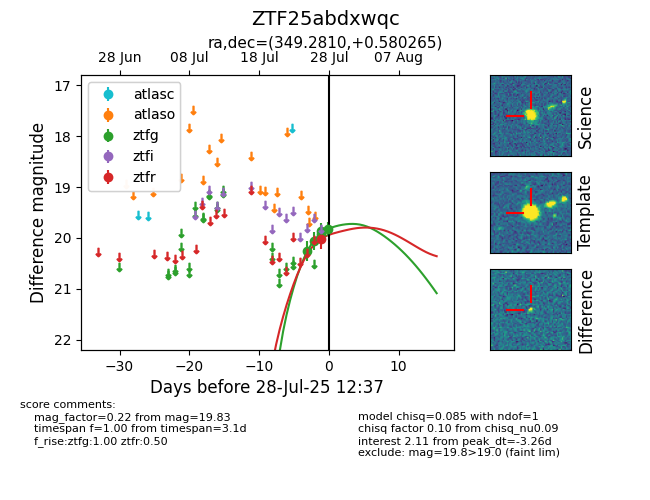

Target ZTF25abdxwqc at 2025-07-28 12:37, see:
FINK: fink-portal.org/ZTF25abdxwqc
Lasair: lasair-ztf.lsst.ac.uk/objects/ZTF25abdxwqc
ALeRCE: alerce.online/object/ZTF25abdxwqc
alt names
ZTF25abdxwqc (ztf,fink)
coordinates:
equatorial (ra, dec) = (349.2810,+0.58027)
galactic (l, b) = (79.7968,-54.19632)
photometry
last ztfg=19.83, ztfr=20.02
5 ztfg, 1 ztfr detections
